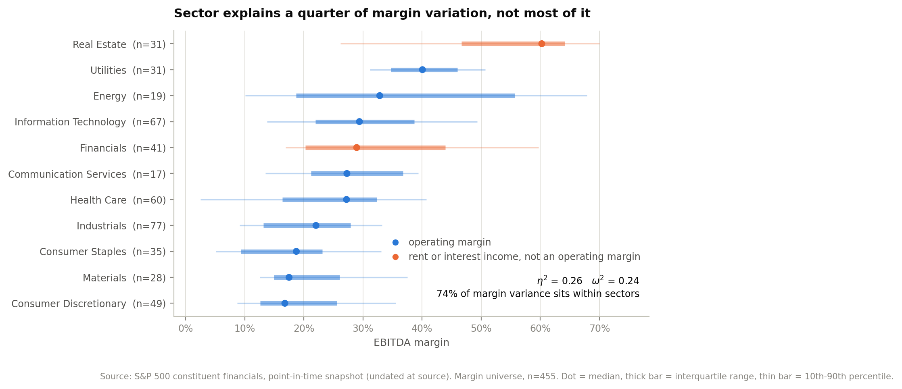
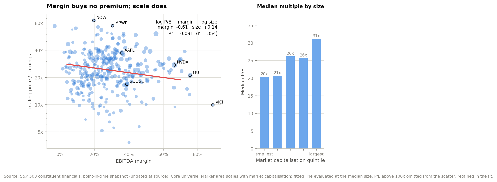
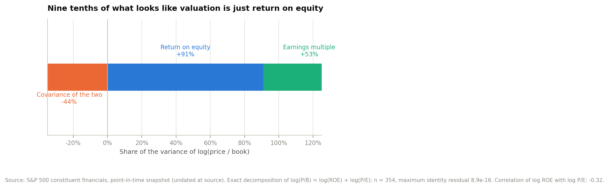

Equity analysis · Capital markets
An extract with no income statement and no balance sheet. Every fundamental here is reconstructed from accounting identities — and two received ideas do not survive the test.
Interactive dashboard Repository Executive summary Technical appendix
The extract carries prices and multiples but no statements. Revenue, net income, return on equity and payout are all recoverable from identities:
The algebra is implemented twice — once in Python and again in SQL — so the two paths can be reconciled against each other.
Sector medians span 43 points of EBITDA margin, which reads as though industry determines profitability. A one-way analysis of variance puts the actual figure at η² = 0.261 (F = 15.7, p < 0.001, n = 455). Seventy-four per cent of the variation sits within sectors.
Strip out Financials and Real Estate — whose "margins" are interest and rent and are not comparable — and it falls to 0.149. At sub-industry level it reaches 0.587, which is where the real grouping is.

Regressing log P/E on EBITDA margin and log market cap: margin −0.607 (p = 0.002), size +0.144 (p < 0.001), R² = 0.091. Higher-margin companies trade on lower multiples once size is controlled for.
The naive specification — earnings yield on ROE — returns R² = 0.002. That is a genuine null and it is reported as one. The reason is mechanical and worth stating: ROE = (P/B) ÷ (P/E) and net margin = (E/P) × (P/S) are both rearrangements of the multiples, so regressing one on the other is closer to an identity check than to a test. EBITDA margin is the only price-free measure of quality in the file.

log(P/B) = log(ROE) + log(P/E) exactly. Decomposing the variance: 91% is variance in ROE, 53% is valuation, and −44% is covariance between them — the market marks down the multiple on high-return companies, with corr(log ROE, log P/E) = −0.32.

Comparing what each company can grow at from retained earnings against what its multiple implies the market is pricing in: 69 of 285 screened companies are priced above what they can fund — $4.24tn, 6.4% of index capitalisation. The deficit group pays out a median 66% of earnings on a median 8.8% ROE; the surplus group pays 22% on 21.2%. Twenty-one of the 29 screened utilities are on the list, which is what you would expect from a regulated sector and is a useful check that the screen is behaving.
What this is for
The screen is a starting list, not a conclusion. A company can be priced above its self-funded growth rate for good reasons — a credible acquisition programme, a deliberate leverage step, a payout it intends to cut. What the screen does is put the 69 names where that argument has to be made explicitly, and quantify what is riding on it.
The file is an undated point-in-time snapshot with no as-of column, and the publisher overwrites it in place; 17 constituents carry no market data at all, several of them names that have left the index, so the roster and the price vector were struck at different times. Twenty-eight loss-making companies have no P/E and drop out, which biases the retained sample toward profitability. Both are stated rather than corrected.